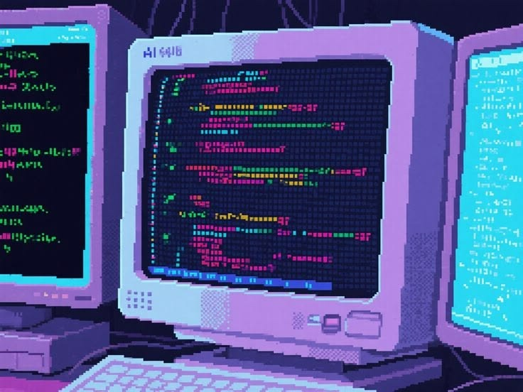
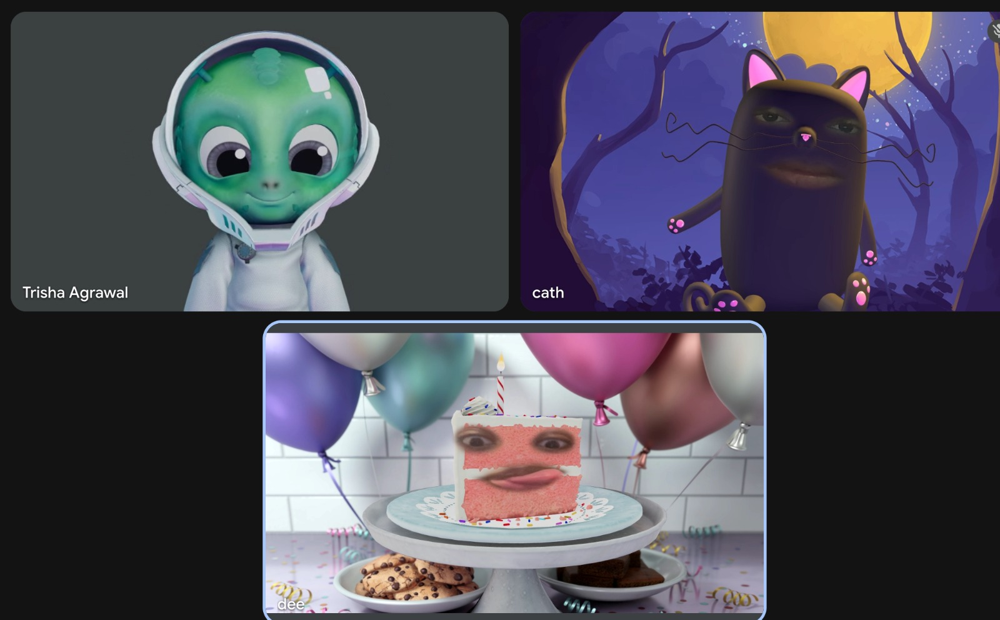

About SecureShell
SecureShell is a short, practical tutorial that teaches you how to keep your online accounts safe. Over three lessons you will learn how to build passwords that are hard to guess, how two-factor authentication adds a second lock on your accounts even if a password ever leaks, and how a password manager can remember your passwords for you so you never have to reuse a weak one. Each lesson ends with a short quiz question so you can check what you have learned along the way.

Who is this for?
This tutorial is written for anyone who uses the internet every day but has never had a clear, step-by-step guide to account security - students, new employees, or anyone who has ever reused the same password on more than one site. No prior technical background is needed; each lesson explains the terms it introduces.
About the team
SecureShell was built by a three-person student team for ISTE 140.
